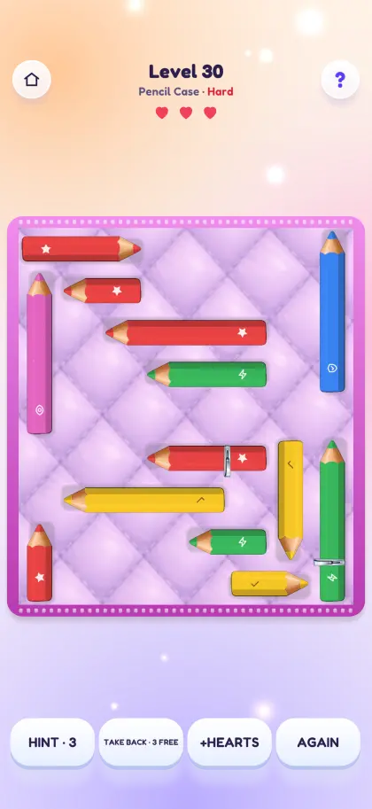

Pencil Case: the tap-away puzzle
By the Sultan of Niyyat team, who make Puzzle Jar. Last updated .
Pencil Case is the tap-away puzzle in Puzzle Jar. Colored pencils lie in an open case, each pointing up, down, left or right, and a tapped pencil slides out the way its sharpened tip points. If another pencil is in the way, it bumps and you lose one of three hearts. Take every pencil out to win; lose all three hearts and the level is over, with a rescue, a take back or a fresh try on offer.

On this page: 13 questions
- How do you play Pencil Case?
- Why did I lose a heart in Pencil Case?
- Does tapping the same blocked pencil twice cost two hearts?
- What does the clip on a pencil mean?
- What are the erasers for?
- How do you lose a level of Pencil Case?
- What is the safest way to clear a crowded pencil case?
- Is there always a way to clear the case without losing a heart?
- What does the hint do in Pencil Case?
- Does Take back give my heart back?
- What does +HEARTS do?
- How hard does Pencil Case get?
- Who is Pencil Case for?
How do you play Pencil Case?#
Look at the tip, then tap. The sharpened end shows which way a pencil will travel. If the whole lane from the tip to the edge of the case is empty, the pencil shoots out. If anything sits in that lane, even far down it, the pencil slides up to it, knocks it and slides back. The case starts at 4 by 4 squares and grows to 9 by 12 over the levels.
Why did I lose a heart in Pencil Case?#
You tapped a pencil whose path was blocked. Each new bump costs one heart, and the level gives you three, shown as heart shapes at the top. The blocker is often a long pencil lying across the lane a few squares away, which is easy to miss on a big case. Tapping a clipped pencil before its turn also counts as a bump.
Does tapping the same blocked pencil twice cost two hearts?#
No. If a pencil has already bumped and no other pencil has left the case since, tapping it again only makes it wiggle. We added this because a nervous double tap should not cost you the level. Once any pencil leaves, the slate is wiped, and a fresh bump costs a heart again.
What does the clip on a pencil mean?#
A clipped pencil must leave last of its color. Clips start appearing on Pencil Case level 16. The steel clip stays on until every other pencil of that color is gone; then it pops off and the pencil can slide out like any other. So when you see a clip, count the other pencils of its color and plan to free them first.
What are the erasers for?#
They are fixed walls. Erasers arrive from level 10, never move and never need clearing. No pencil ever points at an eraser, so one is never in a pencil's way. What they do is take up squares, which shapes where pencils can lie and makes the case harder to read at a glance.
How do you lose a level of Pencil Case?#
By running out of hearts. There is no move count and no clock, so slow thinking is free; only bumps hurt. When the third heart breaks, an "Out of hearts" card offers +HEARTS, TAKE BACK, TRY AGAIN and HOME.
What is the safest way to clear a crowded pencil case?#
Trace each lane all the way to the edge before you tap. Start with pencils that point outward along an edge, since nothing can sit in front of them. Then ask which pencil, once gone, opens the most lanes for others; long pencils lying across the middle are usually the ones holding everything up. Taking a pencil out never blocks anything new, so a free pencil is always a safe tap.
Is there always a way to clear the case without losing a heart?#
Yes. When we make a level, any pencils that would block each other forever are turned round or removed, and a computer then takes every pencil out without a single bump. Our tests replay that clean run on every level before it ships. Hearts are there to forgive slips, not to make up for a broken board.
What does the hint do in Pencil Case?#
It makes one pencil glow that can leave right now. Of the free pencils, it picks the one that opens the way for the most others, so following hints also teaches you how to read the case. Since removing a pencil can never close a lane, a hinted pencil is never a trap.
Does Take back give my heart back?#
Yes. In Pencil Case, taking back a bump returns the heart it cost, and taking back a pencil that left puts it back in its place. The first three take backs on each level cost nothing; after that they come from the take-back count all 20 games share.
What does +HEARTS do?#
It fills your three hearts again and adds two golden hearts on top, five in all. It works once per level. The +HEARTS button sits in the bottom bar and can be used as soon as a heart is missing, or from the "Out of hearts" card. Watching a video you pick pays for it; so does one rescue from your count.
How hard does Pencil Case get?#
Level 1 cannot be lost, because every pencil on it can leave from the start. After that the case grows slowly, changes shape from round to round (wide, square, tall), and the pencils get longer, up to four squares. Erasers join at level 10 and clips at 16. Rounds go easy, medium, hard, with a boss every fourth hard level, and an easy level always comes after a hard one.
Who is Pencil Case for?#
Players who like quick, clean puzzles with a small sting for carelessness. There is no luck involved: the only skill is noticing what is in the way. If you enjoy the popular tap-to-clear direction puzzles, this is our take on that genre, with pencils, clips and erasers instead of plain shapes.